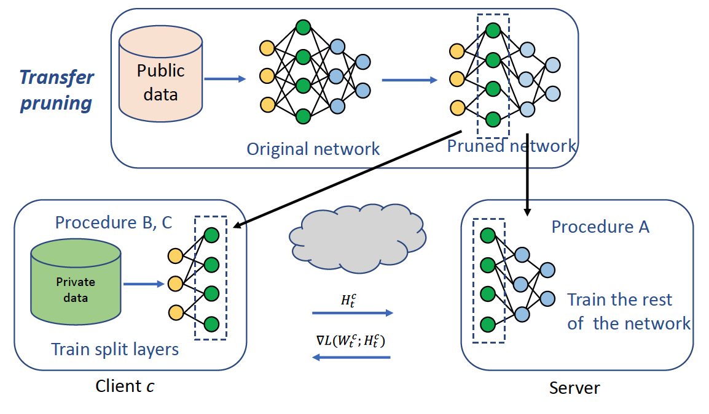
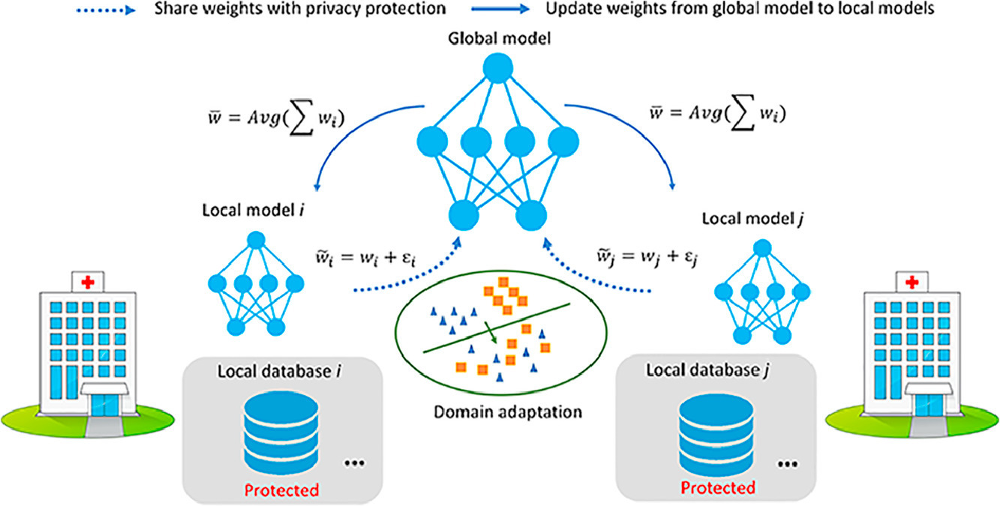
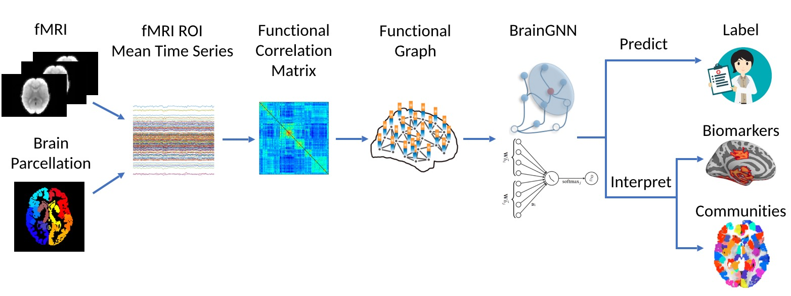
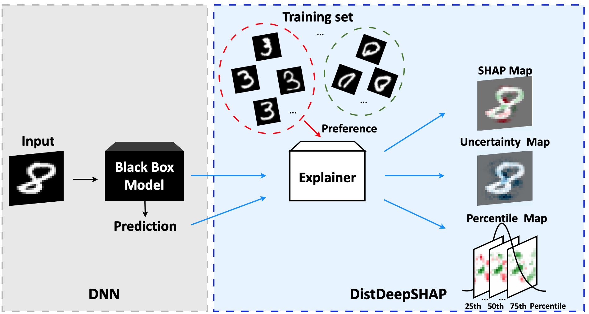

Hi, I am Xiaoxiao Li. I am an Assistant Professor in the Electrical and Computer Engineering Department and an Associate Member in the Computer Science Department at the University of British Columbia (UBC). Before that, I was a postdoc in the Department of Computer Science at Princeton, working with Prof. Kai Li and Prof. Olga Troyanskaya. In 2020 summer, I obtained my Ph.D. degree in Biomedical Engineering from Yale University, where I was a member in Image Processing and Analysis Group(IPAG). I was fortunate to be advised by Prof. James Duncan. I received Yale Advanced Graduate Leadership Fellowship in 2018. I obtained my B.S. (honors degree) from Chu Kochen College, Zhejiang University, China, in June 2015.
My current research lies in both developing deep learning algorithms/theories and their applications. Our research topics cover computer vision, trustworthy AI (privacy, explainability, robustness, and fairness), data-efficient and green AI, data economy, secure machine learning, un-/weakly-/semi-supervised learning, medical image analysis and health informatics. I aim to narrow the gap between AI research and its applications, with a focus on healthcare field. My research plan is to develop next-generation trustworthy AI systems. What is trustworthy AI? Please read this survey.
If you want to work with me, please email me (click here) including your CV, transcript, and one of your research papers if applicable. Due to the large amount of emails I receive, I may not be able to respond to each one individually. To help me notice you email, please put "[ILOLLEH]", written backwards, in your email subject. Please strictly follow the instruction :)
Graduate Students: Multiple positions for graduate students are available for the study of machine learning, computer vision, NLP, trustworthy AI, or AI for healthcare. We do not make decision before seeing your application in the application system.
Intern Students and Visiting Students/Scholars: All formats of local and remote collaboration are welcomed. For the intern students at UBC, we need to work together through course registration or summer internship programs. For the intern students outside of UBC, you need to register as visiting students through VIRS program.
News
[03/2022] We receive NVIDIA Academic Hardware Grant to continously support our FL projects. Thank Nvidia for the generous sponsorship.
[02/2021] I am selected as a Google Cloud Research Innovator.
[01/2021] One paper is accepted by ICLR 2022.
[12/2021] One paper is accepted by AAAI 2022. Congrats, Weina!
[10/2021] One paper is accepted by BMVC 2021.
[09/2021] One paper is accepted by NeurIPS 2021 (Spotlight). Congrats, Monica!
[09/2021] One paper is accepted by Medical Image Analysis.
[08/2021] One paper is accepted by DCL workshop.
[08/2021] We receive NVIDIA Academic Hardware Grant (1 NVIDIA A100). Thank Nvidia for the generous sponsorship.
[06/2021] One paper is accepted at MICCAI 2021.
[05/2021] One paper is accepted at ICML 2021.
[01/2021] Proposal about drug discovery funded by MSR & Mila Research ($65,000 CAD).
[01/2021] Two papers are accepted at ICLR 2021.
[10/2020] Best Paper Award in DART 2020.
[08/2020] Awarded MICCAI Student Participation Award.
[07/2020] One paper is accepted at Medical Image Analysis (IF 11.15).
[06/2020] One paper is accepted at ICML 2020.
[05/2020] Two papers is accepted at MICCAI 2020.
[03/2020] Passed Thesis Defense at Yale.
Recent Publications
For the complete list, please check my google scholar. Email me if you have any questions about my papers or code, or if you would like to collaborate with me.
Unsupervised Federated Learning is Possible: A Case of Class-Conditional-Sharing Clients.
Lu, N., Wang, Z., Li, X., Niu, G., Dou, Q., & Sugiyama, M.,
ICLR 2022
[paper]
Evaluating Explainable AI on a Multi-Modal Medical Imaging Task: Can Existing Algorithms Fulfill Clinical Requirements?
Jin, W., Li, X., & Hamarneh G.,
AAAI 2022
[paper]
Leveraging Human Selective Attention for Medical Image Analysis with Limited Training Data.
Huang, Y., Li, X., Yang, L., Gu, L., Zhu, Y., Seo, H., Meng, Q., Harada, T. & Sato, Y.,
BMVC 2021.
[paper]
Subgraph Federated Learning with Missing Neighbor Generation.
Zhang, K., Yang, C., Li, X., Sun, L., & Yiu, SM.
NeurIPS 2021 (Spotlight).
[paper]
[code]
EMA: Auditing Data Removal from Trained Models.
Huang, Y., Li, X.*, & Li, K.
MICCAI 2021.
[paper]
[code]
FL-NTK: A Neural Tangent Kernel-based Framework for Federated Learning Analysis.
Huang, B., Li, X., Song, Z., & Yang, X.
ICML 2021.
[paper]
FedBN: Federated Learning on Non-IID Features via Local Batch Normalization.
Li, X., Jiang, M., Zhang, X., Kamp, M., & Dou, Q.
ICLR 2021.
[paper]
[code]
On InstaHide, Phase Retrieval, and Sparse Matrix Factorization.
Chen, S., Li, X., Song, Z., & Zhuo, D.
ICLR 2021.
[paper]
Multi-site fMRI Analysis Using Privacy-preserving Federated Learning and Domain Adaptation: ABIDE Results.
Li, X., Gu, Y., Dvornek, N., Staib, L., Ventola, P., & Duncan, J. S.
Medical Image Analysis.
[paper]
[arxiv]
[code]
Efficient Shapley Explanation For Features Importance Estimation Under Uncertainty.
Li, X., Zhou, Y., Dvornek, N., Gu, Y., Ventola, P., & Duncan, J. S.
MICCAI 2020.
[paper]
[code]
Pooling Regularized Graph Neural Network for fMRI Biomarker Analysis.
Li, X., Zhou, Y., Dvornek, N., Zhang, M., Zhuang, J, Ventola, P., & Duncan, J. S.
MICCAI 2020.
[paper]
[arxiv]
[code]
Adaptive Checkpoint Adjoint Method for Gradient Estimation in Neural ODE.
Zhuang, J., Dvornek, N.C., Li, X., Tatikonda, S., Papademetris, S.,and Duncan, J.S.
ICML 2020.
[paper]
[arxiv]
[code]
Efficient Interpretation of Deep Learning Models Using Graph Structure and Cooperative Game Theory: Application to ASD Biomarker Discovery.
Li, X., Dvornek, N.C., Zhou, Y., Zhuang, J., Ventola, P. and Duncan, J.S.
IPMI 2019.
[paper]
[arxiv]
Interpretable Multimodality Embedding of Cerebral Cortex Using Attention Graph Network for Identifying Bipolar Disorder.
Yang, H.*, Li, X.*, , Wu, Y., Li, S., Lu, S., Duncan, J.S., Gee, J.C. and Gu, S.
MICCAI 2019.
[paper]
[arxiv]
Graph Neural Network for Interpreting Task-fMRI Biomarkers.
Li, X., Dvornek, N.C., Zhou, Y., Zhuang, J., Ventola, P. and Duncan, J.S.
MICCAI 2019.
[paper]
[arxiv]
Recent Projects
Here are my recent exciting projects. For the full list of my projects, please refer to my publications.

Federated Learning on Non-iid Features via Local Batch Normalization
Most of the previous federated learning work has focused on a difference in the distribution of labels. Unlike those settings, we address an important problem of FL, e.g., different scanner/sensors in medical imaging, where local clients may store examples with different marginal or conditional feature distributions compared to other nodes, which we denote as feature shift non-iid. In this work, we propose an effective method that uses local batch normalization to alleviate the feature shift before averaging models.

Transfer Pruning for Inversion Attack Defense
We propose to prune a target neural network with a public datasetand transfers it to the distributed learning setting to collaboratively train the pruned network with distributed private datasets via sharing a hidden layer of representations, without sharing the data. Our experiments show that the proposed approach achieves a much better trade-off between accuracy and privacy preservation.

Privacy-preserving Multi-site Medical Images Analysis
We present a privacy-preserving federated learning framework for multi-site fMRI analysis. To overcome the domain shift issue, we have proposed two strategies: MoE and adversarial domain alignment to boost federated learning model performance. We have shown federated learning performance can potentially be boosted by adding domain adaptation and discussed the condition of benefits. Our approach brings new hope for accelerating deep learning applications in the field of medical imaging, where data isolation and the emphasis on data privacy have become challenges.

BrainGNN: Explainable Graph Neural Network for Neuroimaging Analysis
BrainGNN takes graphs built from neuroimages as inputs, and then outputs prediction results together with interpretation results.With the built-in interpretability, BrainGNN not only performs better on prediction than alternative methods, but also detects salient brain regions associated with predictions and discovers brain community patterns.

DistDeepSHAP: Efficient Shapley Explanation for Feature Importance Estimation Under Uncertainty
We propose DistDeepSHAP, a post-hoc feature importance estimation method under uncertainty evaluation for deep learning models.First, it can obtain uncertainty estimates for the provided feature importance scores. Second, it can better utilize the empirical distribution and has the potential for better feature importance scores estimation from the generated percentile saliency maps. Last but not least, it can compare with arbitrary subgroup references and interpret subgroup salient features, which is crucial for medical image study.
Talks
[10/2021] Invited talk about "Trusted AI for Healthcare: from Theory to Practice" at Chinese University of Hong Kong, the University of Edinburgh, and MICS [Video(in Chineses)].
[02/2021] Invited talk about Trustworthy AI for Healthcare at Emory University.
[01/2021] Invited talk about Trustworthy AI for Healthcare at Istanbul Technical University.
[11/2020] Invited talk about BrainGNN at Tulane University.
[11/2020] Invited talk about BrainGNN at Lehigh University.
[09/2020] Invited talk about Multi-site Federated Learning for NeuroImaging Analysis at Chinese Academy of Sciences.
Teaching
[2017, 2018] ENAS 194: Ordinary and Partial Differential Equation (Yale University)
[2017, 2019] BENG 352: Biosignal Processing (Yale University)
[2021] COS 598D: Systems and Machine Learning (Princeton University) [Course website]
[2022] ELEC 400M: Machine Learning Fundamentals for Engineers (UBC) [Syllabus]
Students
Chun-Yin Huang (PhD of 2021, from Carnegie Mellon University)
Sana Ayromlou (MASc of 2021, from Sharif University of Technology, co-advised with Prof. Purang Abolmaesumi)
Nan Wang (Visting PhD student, from East China Normal University)
Service
Organizer of NeurIPS 2021 workshop on Medical Imaging Meets NeurIPS.
Organizer of ICML 2021 workshop on Interpretable ML in Healthcare.
Organizer of MICCAI 2021 workshop on Distributed and Collaborative Learning
President of Women in MICCAI (2021-2023)
Reviewer of ICML, ICLR, NeurIPS, ICCV, AAAI, MICCAI, IPMI, TPAMI, Nature Machine Intelligence, MedIA, TMI, Neural Networks, etc.